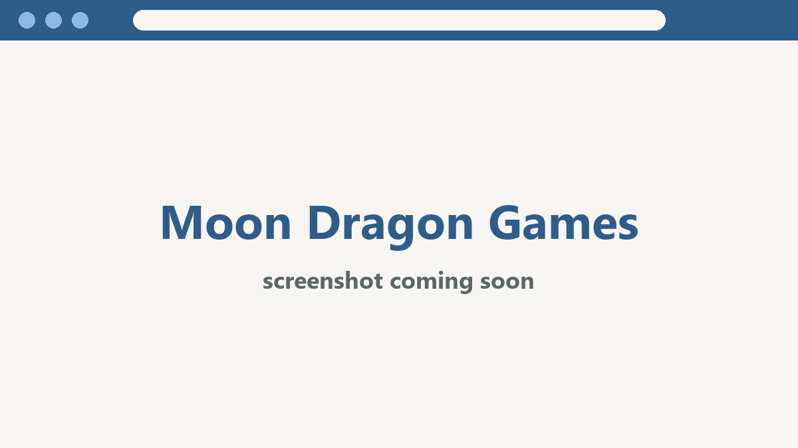

Projects
-
Moon Dragon Games website
A website for Moon Dragon Games, a local game store in Everett, WA.

What I’m building while I learn
A website for Moon Dragon Games, a local game store in Everett, WA.
